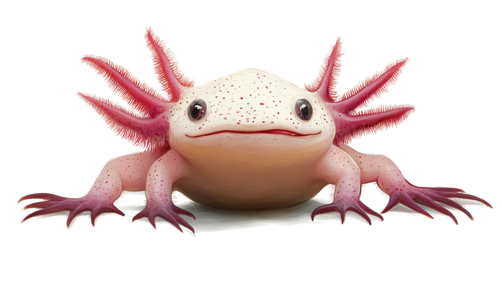

1. Paste HTML
2. Options
Links list
Duplicates
Link statuses
References (HTML)
Copied!
Cleaned HTML
Copied!

It does more than just collect links:
Small but mighty — always ready to tidy up your content.